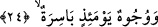
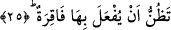

Âriflerden biri şöyle der: Yaratıklar Allah Teâlâ’ya en yakın komşudurlar. Bu ifâde
insanlara verilecek müjdelerin en büyüklerindendir. Çünkü komşunun komşu üzerinde
meşrû ve mâruf; yâni bilinen hakları vardır. Bunları Allah’ı bilen âlimler bilirler. O
hâlde her müslümanın ölüm esnâsında bu ilâhî komşuluk noktasında hazır bulunması
gerekir. Kişi can verirken Hak Teâlâ’dan -O’nun meşru kıldığı ölçülere göre- komşunun
komşudan almayı hak ettiği şeyleri talep ettiği noktada bulunması gerekir. Nitekim Allah
Teâlâ peygamberi Hz. Muhammed (s.a.) Efendimiz’e; “(Muhammed!) Rabbim! (onlar
hakkında) adâletinle hükmünü ver... dedi” (el-Enbiya, 21/112) buyurur. Bunun
anlamı: Ey rabbim! Sen onlar hakkında bize teşri’ buyurduğun ve gereğine göre amel
ettiğimiz hak ile hükmünü ver. Tâ ki kerem-i ilâhînin gereği olan hiçbir şeyi inkâr
etmeyelim, demek olur. Bu ifâde, Allah Teâlâ’ya ihtiyaç bildiren boyun eğmeyi ve onun
karşısında zelil olmayı belirten bir ifâdedir.
24. Yüzler de vardır ki, o gün buruşacaktır;
Çok asık, kapkaranlık olacak, üzerlerinde sevinç adına zerre olmayacaktır. Bu yüzler
kâfir ve münâfıkların yüzleri olacaktır.
Râğıb İsfahânî âyette yer alan “bâsire”nın kökü olan “el-besr”in herhangi birşeyi
daha vakti gelmeden önce acele elde etmeyi istemek anlamına geldiğini söyler. Burada
şöyle bir soru akla gelebilir: ‘Yüzler vardır ki o gün asık olacaktır’ âyet-i kerîmesinde
ifâde edilen surat asma ölümden önce olmayacaktır. Burada neden ölümden önceymiş
gibi zikrediliyor?” Bu soruya bir kaç şekilde cevap verilmiştir. Bâzıları; “bu surat
asmanın haber verildiği ifâdesi daha vakti gelmeden önce haber verilmekte ve
söylenmektedir” demişlerdir. Başka bâzıları; “Bu ifâde onların cehenneme
götürülmeden önceki hâllerine işâret etmektedir” demişlerdir. Âyette yer alan “el-besr”
kelimesi bütün bunlara dikkat çekmektedir. Bunlarla daha sonra başlarına gelecek
olanların tümünün zorlama mesâbesinde cereyan ettiğine; vaktinden önce kendilerine
yapılanlar mesâbesinde cereyan edeceğine dikkatlerimizi çekmektedir. Nitekim bu
söylediklerimize bundan sonra gelecek olan yirmi beşinci âyet delâlet etmektedir.
25. Kendilerinin, bel kemiklerini kıran bir felâkete uğratılacağını sezeceklerdir.
“Bilirler ki” yâni ilgili kişiler ortaya çıkan işâret ve emârelere göre umarlar ki “bel
kemiklerini kıracak bir musîbete uğratılacaklar.”
Müfessir Ebû Hayyân ve et-Tıybî âyette yer alan “tazunnu/bilirler” kelimesini